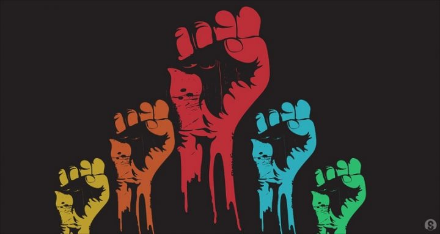

Actua con Qori!
Esta es la pestaña sobre cómo podemos aportar y actuar para favorecer el cambio. Se puede actuar de muchas maneras. De la mejor manera pra salir adelante. ¿Cual es la mejor manera para que salgamos adelante? Lo primero será sabotear el sistema actual el cual depende de nuestro consumo. Vuélvete un hermitaño. Consume lo menos posible. Adicionalmente, si vas a consumir algo, consume algo que no pertenezca a una transnacional ya que solo contribuirás con su monopolio. Si es posible, consume algo de gente de la localidad o de la empresa o emprendimiento más pequeño que conozcas.
Desarrolla un "Negocio colectivo". Imagina formar una empresa que no busque tener utilidades. Esta empresa, necesariamente va a ser más competitiva que una empresa que busca tener utilidades. Las empresas colectivas del futuro deberían pertenecer a todos. Eso posibilitará que la mayoría de la gente, en vez de comprar, por ejemplo gaseosas, a una empresa como Coca cola, en vez de eso, compre las gasesos a su empresa de gaseosas colectiva local. Es una decisión que depende de nosotros y de nuestro accionar colectivo. ES POSIBLE librarse de las transnacionales. Simplemente te tenemos que hacer un esfuerzo colectivo, masivo, coordinado y para eso, es necesario que todos conozcamos los motivos detras de nuestra manera de actuar.